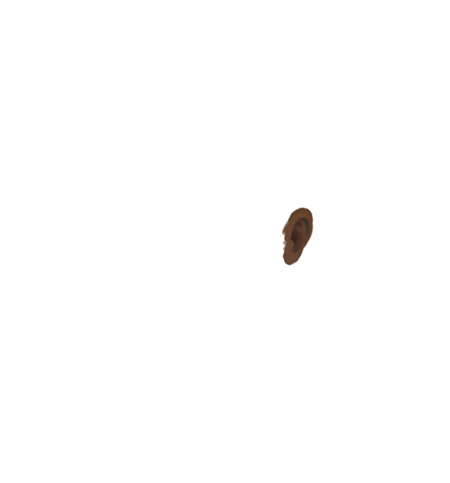

<!doctype html>
<html>
<head>
<script type="text/javascript" src="../../jQuery/jquery-3.1.1.js"></script>
<style>

#portrait img{
	width:1000px;
	position:absolute;
	top:0;
	left:0;
	-moz-transform: scaleX(-1);
        -o-transform: scaleX(-1);
        -webkit-transform: scaleX(-1);
        transform: scaleX(-1);
	}
.eye {
	opacity:0.85;
}
/*.hair {
	filter: saturate(70%);
}*/
.mouth {
	filter: saturate(90%);
}

.brows {
	opacity:0.85;
}


.very-light {
	filter: brightness(1.6) saturate(0.80);

}
.light {
	filter: brightness(1.3);
}

.dark {
	filter:brightness(0.8);
}
.very-dark{
	filter:brightness(0.5);
}

.white-hair, .white-hair-red {
	filter: brightness(2.2) saturate(0.15);
}
.very-light-hair {
	filter: brightness(2) saturate(0.50);

}
.light-hair {
	filter: brightness(1.3) saturate(0.70);
}

.dark-hair {
	filter:brightness(0.8);
}
.very-dark-hair{
	filter:brightness(0.4) contrast(90%);
}

.very-light-hair-red {
	filter: brightness(2) saturate(0.50) hue-rotate(-17deg);

}
.light-hair-red {
	filter: brightness(1.3) saturate(1.10) hue-rotate(-12deg);
}

.mid-hair-red{
	filter: hue-rotate(-17deg);
}

.dark-hair-red {
	filter:brightness(0.8) hue-rotate(-17deg);
}
.very-dark-hair-red{
	filter:brightness(0.4) contrast(90%) hue-rotate(-17deg);
}
.black-hair, .black-hair-red{
	filter:brightness(0.3) saturate(0.4);
}

</style>
</head>


<body>

 <div id="portrait"></div>
<div id="skincolor"></div>

<script>
//image appear on top of other image(absolute position same eaxh time, z-index)
//get image from library of possible images in an array
//randomly for now.

var shoulders=[];

function listrand(listname) {
	return listname[Math.floor(Math.random()*listname.length)]
}

var skintypes = ["very-light","light","mid","dark","very-dark"];

var skin = listrand(skintypes);
// skin = "very-light";
var browcolor;
if (skin=="very-dark"){
	browcolor = "very-dark";
}
else {
	browcolor="mid";
}

// for(x=1;x<14;x++){

// shoulders.push("shoulders"+x);

// }


//var shoulderschoice=Math.floor(Math.random()*shoulders.length);


// $("#portrait").html("");


//var faces=["bumpface1","bumpface2","chunkyface","chunkyface2","femface1","manlyface","manlyface2","narrowface","narrowface1","pudgyface","pudgyface2","regularface1","regularface2","squarebumpface","squarebumpface2","squareface","squareface2","daveface"];


var faces = [];

for(x=1;x<12;x++){

faces.push("face"+x);

}

$("#portrait").html($("#portrait").html()+"");


// var noses=["bigbumpnose","parleynose","largepointynose","buttonnose","dwarfnose","largewidenose","orcnose","pudgynose","smallpointynose","smallwidenose","hooknose","middlebumpnose","orcnose2","smallbumpnose","davenose"];


// var eyes=["almondeyes","bigeyesdark","bigeyesempty","bigeyespupil","biglasheyes","biglasheyesempty","biglasheyespupil","bigpointyeyesdark","bigpointyeyesempty","bigpointyeyespupil","closedeyes","dulleyesdark","dulleyesempty","dulleyespupil","narroweyesdark","narroweyesempty","narroweyespupil","normaleyesdark","normaleyesempty","normaleyespupil","oldeyesdark","oldeyesempty","oldeyespupil","shinyeyes","smalllasheyesdark","smalllasheyesempty","smalllasheyespupil","triangleeyesdark","triangleeyesempty","triangleeyespupil","verynarroweyesdark","verynarroweyesempty","verynarroweyespupil","daveeyes"]

//var eyeschoice=Math.floor(Math.random()*eyes.length);


var mouths = [];

for(x=1;x<15;x++){

mouths.push("mouth"+x);

}


// var mouths=["largemouth","thinlips","linesmilemouth","1fangmouth","catmouth","darklips","pursedlips","tinymouth","widelips","davemouth"];

// var mouthschoice=Math.floor(Math.random()*mouths.length);


$("#portrait").html($("#portrait").html()+"");

var noses = [];

for(x=1;x<27;x++){

noses.push("nose"+x);

}

$("#portrait").html($("#portrait").html()+"");


var eyes = [];

for(x=1;x<27;x++){

eyes.push("eyes"+x);

}
$("#portrait").html($("#portrait").html()+"");


var brows = [];

for(x=1;x<53;x++){

brows.push("eyebrows"+x);

}


// var brows=["fatarrowbrows","floofybrows","semicirclebrows","angrylinebrows","biglinebrows","caterpillarbrows","invisibrows","thinlinebrows","widesharpbrows","davebrows"];

// var browschoice=Math.floor(Math.random()*brows.length);


$("#portrait").html($("#portrait").html()+"");

var hair = [];

for(x=1;x<19;x++){

hair.push("hair"+x);

}

var hairtypes = ["white", "very-light","light","mid","dark","very-dark","black"];

var haircolor = listrand(hairtypes)+"-hair";
if (Math.random()>0.8) {
 haircolor = haircolor+"-red";
}

// var hair=["chinlengthtightcurlhair2","longstraighthair1","shortwavyhair","chinlengthstraighthair","curlyponytail2","longcurlyhair2","longstraighthair2","longtightcurlhair","longwavyhair2","chinlengthcurlyhair","chinlengthcurlyhair2","chinlengthstraighthair2","chinlengthstraighthair3","chinlengthtightcurlhair","chinlengthwavyhair","chinlengthwavyhair2","chinlengthwavyhair3","curlyponytail","mohawk","longcurlyhair","longcurlyhair2","longcurlyhair3","longstraighthair3","longtightcurlhair2","longwavyhair","longwavyhair2","mostlybald","plaitpile","shortishcurlyhair","shortishtightcurlhair","shortishstraighthair","shortishwavyhair","shortstraighthair","shorttightcurlhair","straightponytail","stubble","tightcurlponytail","tightcurlponytail2","wavyponytail","davehair"];

// var hairchoice=Math.floor(Math.random()*hair.length);

//"+listrand(hair)+"
$("#portrait").html($("#portrait").html()+"");


//var ears=["bigroundears","longpointyears","smallpointyears","smallroundears","middlepointyears"];

//var earschoice=Math.floor(Math.random()*ears.length);


$("#portrait").html($("#portrait").html()+"");


// var facehair=Math.random();

// if(facehair>0.75){

// var beard=["straightfullbeard2","stache","wonderousmoustache","bigfatfullbeard","goatee","fatshortfullbeard","tightcurlbeard2","wavyfullbeard2","bigfatfullbeard2","shortfullbeard","tightcurlbeard","wavyfullbeard","davebeard"];

// var beardchoice=Math.floor(Math.random()*beard.length);

// // $("#portrait").html($("#portrait").html()+"");
// }


$("#skincolor").html(haircolor);

</script>


</body>


</html>